Cinemática inversa#
El problema de la cinemática inversa de manipuladores consiste en determinar las posiciones articulares (\(q_1, q_2, \cdots, q_n\)) requeridas para posicionar y orientar el elemento terminal de una manera predefinida. Usualmente el procedimiento es más complejo que el correspondiente para la cinemática directa, ya que el problema de la cinemática inversa está fuertemente ligado a la morfología del robot y en consecuencia no existe una metodología específica que garantice la obtención de una solución.
En general, se suelen utilizar dos métodos o enfoques para abordar el problema de la cinemática inversa: el método analítico y el método geométrico. Ambos presentan ventajas y desventajas que quedarán en evidencia conforme se expongan algunos ejemplos.
\( \renewcommand{\vec}[1]{\boldsymbol{\mathbf{#1}}} \newcommand{\colvec}[3]{\begin{bmatrix}#1\\#2\\#3\end{bmatrix}} \newcommand{\framei}[1]{ \{#1\} } \)
El método analítico#
El método analítico consiste en resolver la ecuación matricial:
En la ecuación anterior, \(H\) representa la posición y orientación deseada para el elemento terminal y la matriz \( T_n^0 \) corresponde a la cinemática directa del manipulador. La tarea de la cinemática inversa se centra en calcular los valores de \(q_1, q_2, ... , q_n\) que verifican la ecuación (26).
En el caso más general, la ecuación matricial (26) conduce a un conjunto de dieciséis ecuaciones escalares con \(n\) incógnitas (\( q_1, q_2, \ldots , q_n \)). Cuatro de esas dieciséis ecuaciones son triviales, dado que la última fila de una matriz de transformación homogénea será siempre de la forma: \( [0,0,0,1] \). Las ecuaciones que resultan usualmente son no lineales, en términos de funciones trigonométricas. Obtener una solución en forma cerrada para este tipo de sistemas de ecuaciones puede llegar a resultar un poco complejo. Cuando no sea posible obtener una solución cerrada, se pueden aproximar los valores articulares utilizando algún método numérico, algo que describiremos en la sección Resolviendo la cinemática inversa de forma numérica.
Para manipuladores de pocos grados de libertad, en los cuales el elemento términal únicamente se puede posicionar (pero no orientar) es común que se proporcione información únicamente acerca de la posición deseada (\(\vec{r}_P\)). En este caso la parte de posición de la matriz \(T_n^0\) se debe igualar con esa posición deseada \(\vec{r}_P\).
Existen manipuladores de tres o cuatro grados de libertad (típicamente), en los cuales la cinemática inversa de posición no es suficiente para calcular los valores articulares requeridos; dado que usualmente estos manipuladores además de posicionarse en un plano o en el espacio, pueden también orientarse en una dirección. El manipulador SCARA es un ejemplo clásico de este tipo, dado que además de posicionarse en el espacio, permite establecer la orientación en una dirección.
En este caso la estrategia es que además de igualar la parte de posición de la matriz \(T_n^0\) con una posición deseada \(\vec{r}_P\), se deben también formular ecuaciones adicionales a partir de la submatriz de rotación y la información de la orientación deseada.
Ejemplo. Calcule la cinemática inversa del manipulador RR mostrado en la Figura Fig. 48. Considere que se requiere que el extremo del manipulador se posicione en las coordenadas \( (P_x, P_y) \).
{kind=link}
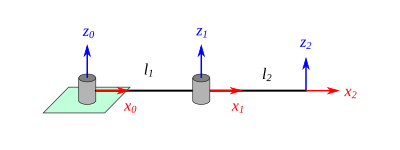
Fig. 48 Manipulador RR#
Solución:
Naturalmente, las longitudes de los eslabones (\( l_1 \) y \( l_2 \)) del robot son valores constantes y por lo tanto se asumen conocidos. Para resolver la cinemática inversa por el método analítico debemos primero calcular la matriz que describe la cinemática directa. En este caso \( T_2^0 \) está dada por:
Una vez conocida \( T_n^0 \) debemos igualar con los valores de posición y orientación deseados. En este caso la parte de posición tenemos que igualarla con las coordenadas \((P_x, P_y)\) que se quieren alcanzar. De esto resulta un sistema de dos ecuaciones:
Si se eleva al cuadrado cada miembro de las ecuaciones anteriores y se suman:
Factorizando y recordando que \( \sin^2 x + \cos^2 x = 1 \), se tiene que:
Para simplificar un poco más podemos aplicar las identidades trigonométricas de suma de ángulos. Sabemos que:
Entonces:
Los términos resaltados en rojo se eliminan, de lo cual nos queda:
Podemos factorizar los dos últimos términos como \( 2 l_1 l_2 c_2 ( c_1^2 + s_1^2 ) \), y aplicar la identidad trigonométrica \( c_1^2 + s_1^2 = 1 \). De esto resultará:
De la expresión anterior el único valor desconocido es \(q_2\), entonces:
Por trigonometría se sabe que:
Entonces podemos escribir la solución para \(q_2\) en términos de la función arcotangente:
Para calcular \(q_1\), de las ecuaciones (27) y (28) podemos dividirlas y manipular la expresión resultante:
Aplicando identidades trigonométricas de suma de ángulos:
Agrupando y factorizando los términos que dependen de \(\cos q_1 \) y \(\sin q_1 \):
De lo cual resulta:
Ejemplo. Calcula la cinemática inversa del manipulador RRR de la Figura rrr_robot_dh_pro_ik, considerando que el elemento terminal deberá alcanzar el punto \( (P_x, P_y) \), y que además el eje \(x_3\) deberá formar un ángulo \( \phi \) con respecto al eje \(x_0\).
{kind=link}
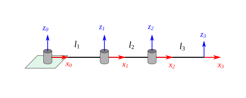
Solución:
La cinemática directa del manipulador RRR está dada por:
Al igualar la parte de posición de esta matriz con la posición deseada, se obtienen dos ecuaciones:
Observe que a partir de estas dos ecuaciones no podríamos resolver la cinemática inversa, puesto que tenemos tres valores articulares desconocidos (\(q_1\), \(q_2\) y \(q_3\)). Sin embargo, podemos obtener ecuaciones adicionales a partir de la información de la orientación deseada. Es sencillo notar que el sistema \(\framei{3}\) y el sistema \(\framei{0}\) difieren en orientación por una rotación en \(z\), así pues si sabemos que el ángulo formado entre \(x_3\) y \(x_0\) debería ser \(\phi\), la orientación deseada se puede expresar en forma de una matriz de rotación como:
Una ecuación adicional puede ser obtenida si igualamos esta matriz con la submatriz de rotación de \(T_3^0\), por ejemplo, si tomamos la primera columna se tiene que:
Si combinamos las primeras dos componentes:
De lo cual resulta una ecuación adicional:
Las ecuaciones (29) y (30) se pueden reescribir sabiendo que \(c_{123} = c\phi\) y \(s_{123} = s\phi\):
Donde \(Q_x = P_x - l_3 c\phi\) y \(Q_y = P_y - l_3 s\phi\), siendo ambos valores completamente conocidos. Observe que las ecuaciones anteriores tienen una forma similar a las ecuaciones del ejemplo del manipulador RR resuelto previamente, salvo que tenemos \( Q_x\) en lugar de \(P_x\), y de manera análoga para \(Q_y\).
Tomando en cuenta lo anterior, podemos establecer entonces que la solución para \(q_2\) está dada por:
Donde:
Y para \(q_1\):
Una vez conocidos \(q_1\) y \(q_2\), se puede obtener \(q_3\) de la ecuación (31):
Cinemática inversa de posición: método geométrico#
Para manipuladores de a lo sumo tres grados de libertad se puede emplear un enfoque geométrico para calcular las variables articulares. Este enfoque sólo nos servirá para resolver cinemática inversa de posición. En el caso de que se requiera alcanzar una cierta orientación, se deberá complementar el procedimiento con las técnicas analíticas.
La idea general del método geométrico es que si queremos calcular la variable articular \(q_i\), debemos proyectar el manipulador en un plano determinado y realizar construcciones geométricas (usualmente triángulos) que nos ayuden a relacionar las distancias y ángulos conocidos del manipulador con aquellos a calcular.
De manera particular, si necesitamos calcular \( q_i \) deberíamos proyectar en el plano:
\( x_{i-1} y_{i-1} \), si la i-ésima articulación es una revoluta.
\( x_{i-1} z_{i-1} \), si la i-ésima articulación es una prismática.
Debemos tener en cuenta que al momento de proyectar el manipulador en los planos que correspondan, es necesario que se haga para una posición lo más general posible ¿A qué nos referimos con esto? Se debe evitar a toda costa representar al manipulador en posiciones articulares asociadas con un ángulo que sean múltiplos de 90°, o bien, posiciones articulares asociadas con una distancia que sean nulas.
Una de las ventajas del método geométrico es que normalmente resultan expresiones mucho más sencillas de manipular y resolver. Es algo que podrás corroborar en los ejemplos que a continuación se abordarán.
Ejemplo. Utilice el método geométrico para calcular la cinemática inversa del manipulador RR mostrado en la Figura Fig. 48. Considere que el elemento terminal deberá alcanzar la posición dada por \((P_x, P_y)\).
Solución:
Recordar que este manipulador lo habíamos resuelto con el método analítico. Primero, es importante comprender que el manipulador RR planar puede alcanzar un punto (\(P_x\), \(P_y\)) con alguna de las dos configuraciones que se muestran en la Figura Fig. 49. En el entendido de que dicho punto está dentro de su espacio de trabajo alcanzable. Las configuraciones se denominan codo arriba y codo abajo, por la obvia analogía de este manipulador con un brazo humano. En lo subsiguiente vamos a desarrollar la solución de cinemática inversa para ambas configuraciones.
{kind=link}
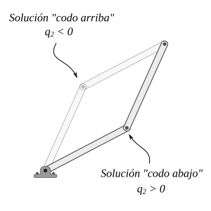
Fig. 49 Dos posibles configuraciones para el manipulador RR#
Solución para la configuración de codo abajo
Lo primero que debemos hacer es proyectar el manipulador en los planos que correspondan. Si queremos resolver para \( q_1 \) debemos proyectar en el plano \( x_0 y_0 \). Para determinar \( q_2 \) debemos proyectar en el plano \( x_1 y_1 \). Algo a considerar en este caso es que los planos \( x_0 y_0 \) y \( x_1 y_1 \) son planos paralelos entre sí, por lo tanto, tendremos la misma proyección resultante en ambos casos.
{kind=link}
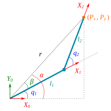
Fig. 50 Proyección del manipulador RR (codo abajo)#
Como se observa en la figura Fig. 50 el manipulador RR se proyecta en el plano \(x_0 y_0\) y se trazan los triángulos mostrados. De este diagrama se observa que el ángulo \(q_1\) puede calcularse una vez conocidos los ángulos \(\alpha\) y \(\beta\) mediante una simple diferencia:
El ángulo \(\alpha\) se determina a partir del triángulo rectángulo formado por los catetos \(P_x\) y \(P_y\), y la hipotenusa \(r\):
La longitud \(r\) puede calcularse como:
El ángulo \(\beta\) se determina aplicando ley de cosenos:
De forma similar a \(\beta\) y utilizando el mismo triángulo se puede determinar \(q_2\) aplicando ley de cosenos:
De lo cual se tiene que:
Solución para la configuración de codo arriba
Vamos a abordar ahora la otra posible solución para la cinemática inversa del manipulador RR, con la configuración de codo arriba. En la Figura Fig. 51 se puede observar la proyección del manipulador en el plano \(x_0 y_0\).
{kind=link}
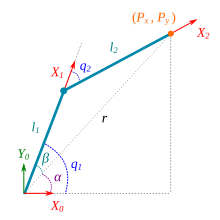
Fig. 51 Proyección del manipulador RR (codo arriba)#
Del diagrama se puede notar rápidamente que el ángulo \(q_1\) es la suma de los ángulos internos \(\alpha\) y \( \beta \), es decir:
El ángulo \(\alpha\) lo podemos calcular con las relaciones de triángulo rectángulo:
Para determinar \(\beta\) podemos aplicar ley de cosenos en el triángulo obtusángulo:
En la expresión anterior \(r\) es un valor no conocido, pero que podemos calcularlo aplicando el teorema de Pitágoras en el triángulo rectángulo:
Para calcular a \(q_2\) podemos aplicar ley de cosenos en el triángulo obtusángulo:
Antes de establecer el resultado para \(q_2\), es importante mencionar que de acuerdo al diagrama de la proyección trazada, el ángulo \( q_2 \) debería ser negativo, por la manera en la cual se asume su medición (sentido horario) en el esquema. Entonces, es crucial que al resultado que se obtenga de despejar la expresión anterior, se le multiplique por \(-1\), para garantizar lo ya mencionado; es decir:
Ejemplo. Calcule la cinemática inversa del manipulador \(RRR\) mostrado en la figura. Considere que el elemento terminal deberá alcanzar la posición dada por: \( \vec{r}_P = [P_x, P_y, P_z]^T \).
{kind=link}
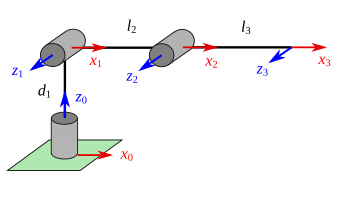
Fig. 52 Manipulador RRR#
Solución:
De acuerdo con lo que sabemos, para calcular a \(q_1\) debemos proyectar en el plano \(x_0 y_0\); para calcular a \(q_2\) en el plano \(x_1 y_1\) y para \(q_3\) en el plano \(x_2 y_2\). Estos dos últimos planos son paralelos. En la Figura Fig. 53 se puede observar una representación tridimensional del manipulador RRR; del lado izquierdo se muestra en color rojizo el plano de proyección \(x_0 y_0\), y del lado derecho en color verde claro se muestra el plano de proyección \(x_1 y_1\).
{kind=link}
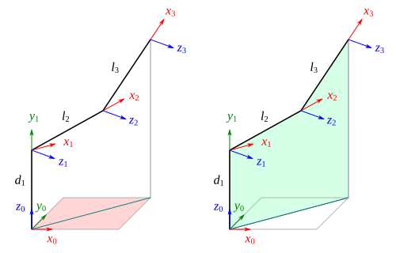
Fig. 53 Vista tridimensional de los planos de proyección del manipulador RRR#
En la Figura Fig. 54 se puede observar el esquema de la proyección del manipulador en el plano \(x_0 y_0\). Es sencillo notar que el valor de \(q_1\) se puede calcular como sigue:
Además, el valor de la distancia \(a\) sería:
{kind=link}
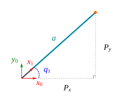
Fig. 54 Manipulador RRR, proyección en \(x_0 y_0\)#
En la Figura Fig. 55 se puede observar la proyección del manipulador en el plano \(x_1 y_1\). La manera de proceder en este esquema es muy similar a lo que se hizo con el manipulador RR. Del esquema observamos que se tienen dos triángulos, los cuales denominaremos de la siguiente manera:
Triángulo 1: el triángulo rectángulo, cuyos catetos son \(a\) y \((P_z - d_1)\), y siendo \(r\) la hipotenusa.
Triángulo 2: el triángulo obtusángulo, cuyos lados son \(l_2\), \(l_3\) y \(r\).
{kind=link}
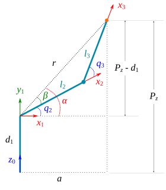
Fig. 55 Manipulador RRR, proyección en \(x_1 y_1\)#
Del esquema se puede observar que la variable articular \(q_2\) corresponde a la diferencia de los ángulos internos \(\alpha\) y \(\beta\):
Utilizando el triángulo \(1\) podemos calcular el valor de \(\alpha\) y \(r\) de la siguiente manera:
En el triángulo \(2\) podemos aplicar ley de cosenos para calcular a \( \beta \):
Utilizando el mismo triángulo \(2\) podemos ahora calcular el valor de \(q_3\), aplicando también ley de cosenos:
De esta manera queda completado el cálculo de la cinemática inversa para el manipulador RRR.
Desacoplo cinemático#
La mayoría de manipuladores industriales de 6 grados de libertad, como el que se muestra en la Figura Fig. 56, están conformados por una morfología base (RRR), a la cual se le adiciona un mecanismo de muñeca esférica (RRR). Para este tipo de manipuladores es posible aplicar una técnica conocida como desacoplo cinemático, la cual consiste en dividir el problema de la cinemática inversa en dos subproblemas: cinemática inversa de posición y cinemática inversa de orientación. La cinemática inversa de posición se suele abordar utilizando un enfoque geométrico y la cinemática inversa de orientación mediante un procedimiento analítico.
{kind=link}
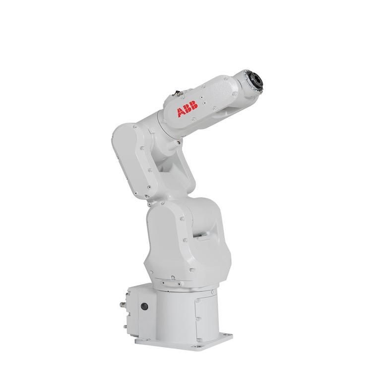
Fig. 56 Robot industrial ABB IRB 120#
A continuación, vamos a describir una serie de pasos necesarios para realizar cinemática inversa de un manipulador de 6 grados de libertad utilizando la técnica de desacoplo cinemático. Para lo subsiguiente asumimos que se conoce de entrada la matriz de transformación homogénea \(H\) que describe la posición y orientación deseada del extremo del manipulador.
Lo primero que hacemos es construir el diagrama cinemático del manipulador, basándonos en los manuales y esquemáticos del fabricante. Es importante identificar correctamente las distancias entre los ejes articulares. Con el diagrama ya realizado, procedemos a establecer los sistemas de referencia siguiendo la metodología de Denavit-Hartenberg. Obtenemos la tabla de parámetros y calculamos las matrices \( R_3^0 \) y \( R_6^3 \). Es importante comprender que \( R_3^0 \) será una matriz que depende de los primeras tres variables articulares ( \( R_3^0 (q_1,q_2,q_3) \) ), y que \( R_6^3 \) depende de las últimas tres \( R_6^3 (q_4,q_5,q_6) \).
Una vez hecho lo anterior, comenzamos a calcular las coordenadas del centro de la muñeca esférica, utilizando la siguiente ecuación:
Donde \(\vec{r}_e\) son las coordenadas de posición que deberá alcanzar el extremo del manipulador, \(d_6\) la distancia entre los ejes \(x_5\) y \(x_6\), medida en la dirección del eje \( z_5 \), y \(\vec{z}_6^0\) la orientación del eje \(z\) del sistema de referencia del elemento terminal con respecto al de la base. Los términos \( \vec{r}_e \) y \( \vec{z}_6^0 \) se obtienen de la matriz \(H\), de manera específica:
Ahora procedemos a resolver la cinemática inversa de posición utilizando el método geométrico y referenciando todo el procedimiento a las coordenadas del centro de la muñeca esférica. Con esto calcularemos las tres primeras variables articulares (\(q_1\), \(q_2\) y \(q_3\)).
Con los valores de \(q_1 \), \(q_2\) y \(q_3\) ya calculados, procedemos a determinar de forma numérica la matriz de rotación \(R_3^0\), sustituyendo los valores numéricos calculados previamente.
De la cinemática directa sabemos que:
Lo cual implica que:
Donde \(R_6^0\) es la submatriz de rotación de \(H\), \( R_3^0 \) la matriz numérica calculada previamente y \(R_6^3\) la matriz de rotación en forma simbólica calculada al inicio del procedimiento. La expresión anterior define una ecuación matricial que deberemos resolver de manera analítica, y con lo cual calcularemos los valores para las tres variables articulares restantes (\(q_4\), \(q_5\) y \(q_6\)). Esta parte es lo que corresponde a la cinemática inversa de orientación. Usualmente deberemos trabajar con las ecuaciones que resulten de igualar los elementos correspondientes a la tercera fila y a la tercera columna: \(r_{31}\), \(r_{32}\), \(r_{33}\), \(r_{23}\), \(r_{13}\); dado que suelen quedar expresiones más sencillas de manipular.
Para comprobar los resultados podemos sustituir los valores calculados en la matriz \(T_6^0\) de la cinemática directa y verificar que sea igual a la matriz \(H\).
\(\newcommand{\atantwo}[2]{\text{arctan2} \left( #1,\, #2 \right) }\)
Ejemplo. Calcula la cinemática inversa del manipulador industrial ABB IRB 140 (ver Figura Fig. 34). Considera que se requiere que el extremo del robot esté posicionado y orientado de acuerdo con la siguiente matriz \(H\):
En la Figura Fig. 57 se puede observar el diagrama cinemático del manipulador y los sistemas de referencia de Denavit-Hartenberg.
{kind=link}
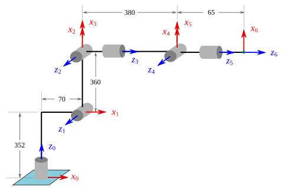
Fig. 57 Diagrama cinemático del manipulador ABB IRB 140#
En la siguiente tabla se muestran los parámetros de Denavit-Hartenberg correspondientes. Recuerda que este procedimiento de cinemática directa para el IRB 140 fue desarrollado en un ejemplo del capítulo de cinemática directa.
\(i\) |
\(a_i\) |
\(\alpha_i\) |
\(d_i\) |
\(\theta_i\) |
|---|---|---|---|---|
\(1\) |
\(70\) |
\(90°\) |
\(352\) |
\(q_1\) |
\(2\) |
\(360\) |
\(0°\) |
\(0\) |
\(q_2\) |
\(3\) |
\(0\) |
\(90°\) |
\(0\) |
\(q_3\) |
\(4\) |
\(0\) |
\(-90°\) |
\(380\) |
\(q_4\) |
\(5\) |
\(0\) |
\(90°\) |
\(0\) |
\(q_5\) |
\(6\) |
\(0\) |
\(0°\) |
\(65\) |
\(q_6\) |
Con esta información podemos calcular las matrices \( R_3^0 \) y \( R_6^3 \), las cuales se muestran enseguida:
Una vez calculadas las matrices \(R_3^0\) y \(R_6^3\), procedemos a determinar las coordenadas del centro de la muñeca esférica, lo cual podemos hacer mediante la siguiente expresión:
Con las coordenadas del centro de la muñeca esférica ya conocidas, procedemos a realizar la cinemática inversa de posición utilizando el método geométrico, con la finalidad de calcular las primeras tres variables articulares (\(q_1\), \(q_2\), \(q_3\)). De acuerdo con lo que aprendimos en secciones previas, si queremos calcular a \(q_1\) deberíamos proyectar en el plano \(x_0 y_0\). En la Figura Fig. 58 se puede observar la proyección del manipulador IRB 140 en el plano \(x_0 y_0\). El valor de \(q_1\) se puede determinar de forma sencilla de la siguiente manera:
El valor de la distancia \(a\) se puede calcular mediante el teorema de Pitágoras:
{kind=link}
Fig. 58 Proyección en el plano \(x_0 y_0\) del robot ABB IRB 140#
Para calcular a \(q_2\) debemos proyectar en \(x_1 y_1\), y para \(q_3\) en el plano \(x_2 y_2\). Se puede verificar que estos planos son paralelos, y por lo tanto la proyección en \(x_1 y_1\) nos bastaría para calcular a \(q_2\) y \(q_3\). En la Figura Fig. 59 se puede observar la proyección del manipulador en el plano \(x_1 y_1\).
{kind=link}
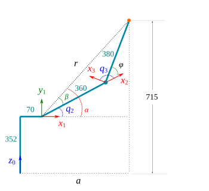
Fig. 59 Proyección en el plano \(x_1 y_1\) del robot ABB IRB 140#
Del esquema podemos notar que el valor de \(q_2\) es la diferencia de los ángulos \(\alpha\) y \(\beta\):
Ahora debemos calcular cada uno de esos valores. Del triángulo rectángulo podemos calcular la distancia (hipotenusa) \(r\):
Y el ángulo \( \alpha \):
El valor del ángulo \(\beta\) se puede calcular aplicando ley de cosenos en el triángulo obtusángulo:
Entonces, el valor de \(q_2\) sería:
Del esquema de la Figura Fig. 59 se puede observar que el ángulo \(q_3\) es el valor del ángulo \(\phi\) más 90°, es decir:
Donde el ángulo \(\phi\) podemos calcularlo utilizando ley de cosenos:
Por lo tanto:
Una vez calculados los valores de \(q_1\), \(q_2\) y \(q_3\), procedemos a sustituir estos valores en la matriz \( R_3^0 \), de lo cual resulta:
Ahora calculamos el producto \( \left( R_3^0 \right)^{-1} R_6^0 \):
La matriz que resulta la igualamos con \(R_6^3\) para formar la ecuación matricial que nos servirá para calcular la cinemática inversa de orientación, es decir:
Para \( q_6 \) podemos resolver dividiendo los elementos \( r_{32} / r_{31} \) de ambas matrices e igualando, es decir:
En el caso de \( q_4 \) podemos hacer \( r_{23} / r_{13} \) e igualar:
El valor de \( q_5 \) podemos determinarlo igualando los elementos \( r_{33} \) de ambas matrices:
Con esto quedan calculadas todas las posiciones articulares requeridas para que el robot ABB IRB 140 se posicione y oriente de acuerdo con la matriz \(H\). Podríamos sustituir todos los valores en la matriz de la cinemática directa \(T_6^0\) y obtendríamos la matriz \(H\). Retomando todos los valores calculados podríamos escribir el vector de posiciones articulares \(\vec{q}\) de la siguiente manera:
Es importante comprender que esta solución obtenida no es única, existen múltiples soluciones para este problema de cinemática inversa. Por ejemplo, para la cinemática inversa de orientación podemos tomar la solución para \(q_5\) dada por:
Y entonces, esto implicaría que \(q_6\) estaría dado por:
Y para el caso de \(q_4\) se tendría que:
Esto nos conduciría a una segunda posible solución de la cinemática inversa dada por \(\vec{q}\):
De igual manera, en la cinemática inversa de posición el manipulador se podría dibujar en una configuración diferente a la planteada, y obtendríamos un conjunto solución diferente. Se recomienda al lector que se tome el tiempo de verificar que las soluciones calculadas son correctas, haciendo la sustitución descrita en párrafos anteriores. El trabajo de multiplicación matricial para obtener \( T_6^0 \), aún cuando se haga de forma completamente numérica, puede llegar a resultar cuando menos tedioso, por lo cual se recomienda que estas operaciones se realicen con el auxilio de herramientas computacionales.
Resolviendo la cinemática inversa de forma numérica#
Método de Newton#
Descenso del gradiente#
Problemas#
Calcule la cinemática inversa del manipulador RRP mostrado en la Figura rrp_robot_dh_pro_ik, considere que \(d_1\) es una longitud conocida. El elemento terminal deberá alcanzar la posición dada por:
{kind=link}
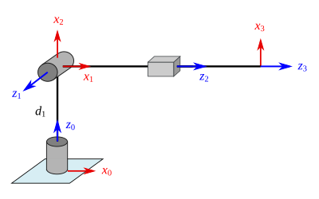
Fig. 60 Manipulador RRP#
Calcule la cinemática inversa del manipulador RRP mostrado en la Figura rrp_robot_dh_pro_ik, considere que \(d_1 = 300 \)mm. El elemento terminal deberá alcanzar la posición dada por:
Calcule la cinemática inversa del manipulador RRP mostrado en la Figura rrp_robot_dh_pro_ik, considere que \(d_1 = 280 \)mm. El elemento terminal deberá alcanzar la posición dada por:
Calcula la cinemática inversa del manipulador RRR mostrado en la Figura rrr_robot_dh_pro_ik, considerando que el elemento terminal deberá alcanzar la posición dada por:
Y orientado de tal manera que el eje \(x_3\) se encuentre alineado con \(x_0\). Se sabe que \(l_1=l_2=200 \text{ mm}\) y \( l_3 = 150 \text{ mm} \).
En la Figura Fig. 61 se muestra un manipulador PRR que deberá alcanzar dos objetos A y B, tal que sus posiciones y orientaciones están definidas mediante los sistemas de referencia \(\{A\}\) y \(\{B\}\) adheridos a estos. Se sabe que:
Calcule los valores articulares requeridos para alcanzar cada uno de los objetos. Considere que \(l_2 = 250\) mm y \(l_3 = 200\) mm.
{kind=link}
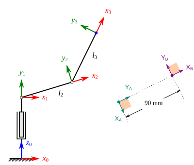
Fig. 61 Manipulador PRR#
En la figura se muestra el esquema de un manipulador planar PPR que deberá realizar operaciones de soldadura a lo largo de la trayectoria compuesta, esquematizada mediante la línea discontinua. Los puntos A y B denotan el inicio y fin de la trayectoria, y el elemento terminal del manipulador deberá alcanzar estos puntos con la orientación dada por los sistemas \(\{A\}\) y \(\{B\}\). La longitud \( l_3 \) es de 100 mm. Se sabe que:
Calcule los valores articulares requeridos para alcanzar los puntos \(A\) y \(B\).
{kind=link}
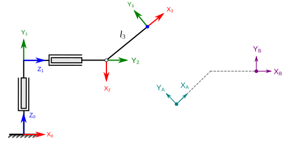
Fig. 62 .#
Calcula la cinemática inversa del manipulador RRP mostrado en la Figura Fig. 63, considerando que el elemento terminal deberá alcanzar el punto \((200, 250, 350)\).
{kind=link}
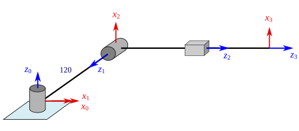
Fig. 63 .#
Para el manipulador industrial mostrado en la Figura Fig. 64, calcule la cinemática inversa de posición y orientación si el extremo del manipulador debe estar orientado y posicionado de acuerdo con:
{kind=link}
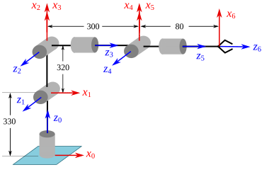
Fig. 64 .#
Para el manipulador industrial mostrado en la Figura Fig. 64, calcule la cinemática inversa de posición y orientación si el extremo del manipulador debe estar orientado y posicionado de acuerdo con:
{kind=link}
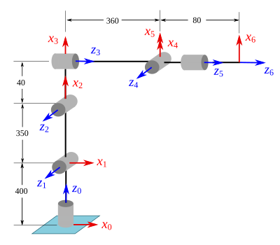
Fig. 65 .#
Utiliza la técnica del desacoplo cinemático para calcular la cinemática inversa del robot FANUC LR Mate 200iC/5L.
Problemas para resolver utilizando la computadora#
Desarrolla una función denominada rr_planar_robot_ik que deberá calcular las dos soluciones (codo arriba y codo abajo) de la cinemática inversa del manipulador planar RR mostrado en la figura. La función deberá recibir como argumentos de entrada las coordenadas (\(P_x\), \(P_y\)) del punto que deberá alcanzar el manipulador, las longitudes de los eslabones: \( l_1 \) y \( l_2 \), y un argumento denominado sol en el cual deberá indicarse la solución a calcular, se usará 'up' para la solución de codo arriba y 'down' para la solución de codo abajo. Enseguida se muestra una sugerencia de plantilla para la definición de la función, designación de los parámetros y de los valores a devolver.
def rr_planar_robot_ik(px, py, l1, l2, sol):
# hacer los cálculos aquí
return q1, q2
Desarrolla una función denominada rrr_planar_robot_ik que calcule la cinemática inversa de un manipulador planar RRR mostrado en la Figura. La función debe recibir como argumentos de entrada las coordenadas \(\left(P_x, P_y\right)\) del punto que deberá alcanzar el manipulador, el ángulo \(\phi\) que describe la orientación, las longitudes de los eslabones: \(l_1\), \(l_2\) y \(l_3\), y un argumento denominado sol en el cual deberá indicarse la solución a calcular, se usará 'up' para la solución de codo arriba y 'down' para la solución de codo abajo.
def rrr_planar_robot_ik(px, py, phi, l1, l2, l3, sol):
# hacer los cálculos aquí
return q1, q2, q3